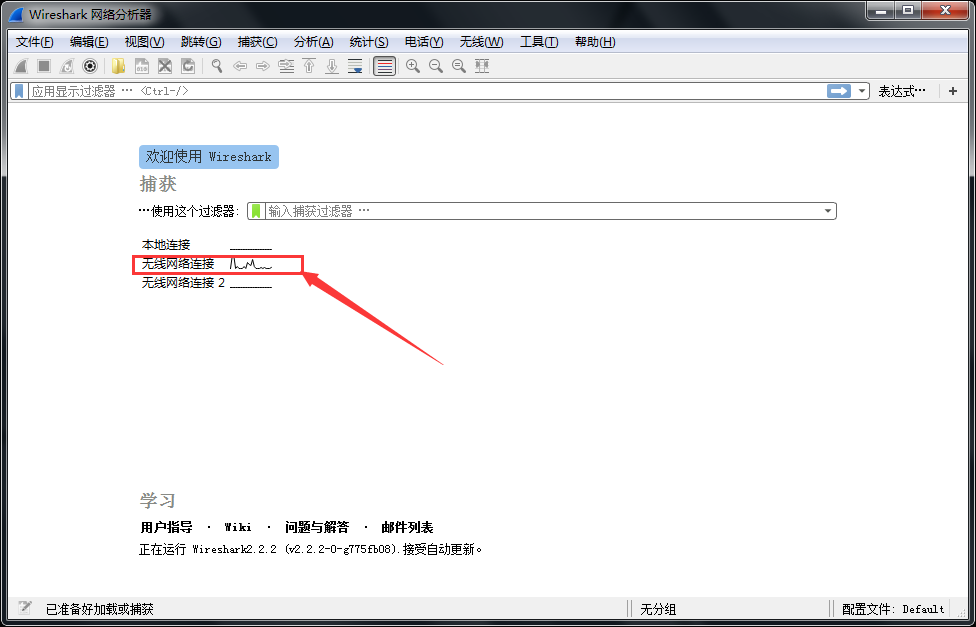
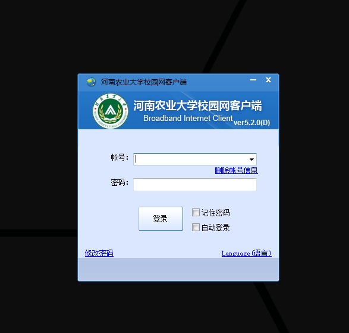
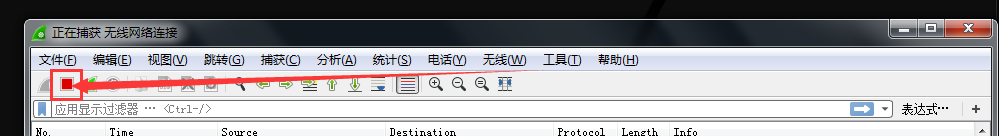
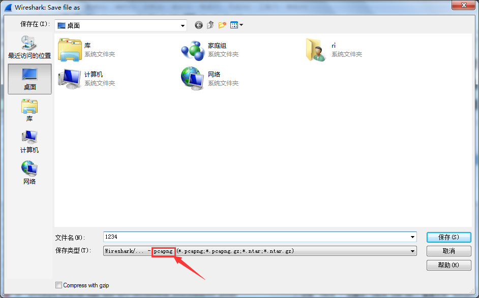

下载
首先感谢开发者:
https://github.com/drcoms/drcom-generic
这个项目基于python实现了d,p,x版drcom认证,请到上述链接查看相关信息,
项目的wiki简单介绍了各版本的使用方法.
首先下载上面的drcom-generic,我将其下载到了家目录~/下,完整目录:~/drcom-generic
取得必要信息
下面启动到windows,或者找一个有windows系统的电脑,因为需要知道官方的drcom客户端是连接的哪个服务器,
以及其他信息,用来配置drcom-generic
在windows下安装上一个软件: wireshark
这个软件很好找,就不说怎么安装了,安装好之后,如果你现在使用drcom上网的,
那么就退出drcom客户端,也就是注销登录(这一步是必须的)
然后打开wireshark, 软件会列出有所有的网络适配器,我用的是无线网,适配器名称时:”无线网络连接”,
只有已连接网络的适配器会有数据波动,如图所示:

双击已连接网络的适配器,本例中是第二项”无线网络连接”,然后wireshark就开始记录这个适配器的数据了,
现在打开drcom客户端,输入账户密码点击登录,如图所示:

等登录成功后,点击drcom客户端里的注销,注销之后点击wireshark软件里的”停止”按钮,如图:

然后选择左上角的”文件”按钮,点击另存为:

名字随便写就行了,一会儿还要改的,本例中保存为abc.pcapng,到这里windows下的工作就完成了.
配置drcom-generic
回到linux系统,把之前保存的abc.pcapng文件复制到~/drcom-generic目录下,然后打开”drcom_d_config.py”文件,
1 | filename = |
搜索上面的文字,看看等号后面是什么,本例中是3.pcapng,
那么就把abc.pcapng改名为3.pcapng,然后打开一个终端,执行以下命令:
1 | cd ~/drcom-generic |
执行完毕后,如果一切正常那么打开”~/drcom-generic/config.txt”文件,就可以看到一些配置信息,
不要关闭”config.txt”文件,再打开同目录下的”latest-wired.py”文件,找到类似”config.txt”内容的部分,
修改”latest-wired.py”里的那部分内容,改成和”config.txt”一样就行了
然后再在”latest-wired.py”文件里找”IS_TEST =”,找到后将等号后面改成”False”
最后连接就开始测试在linux下登录了,使用下面的命令来登录:
1 | cd ~/drcom-generic |
我写了一个方便启动，关闭drcom的脚本，有兴趣的可以看看:
https://github.com/listenerri/scripts/blob/master/shell/drcom.sh
下载下来后赋予可执行权限:
1 | chmod +x drcom.sh |
就可以用这个脚本来启动和关闭了,具体命令是:
1 | #当不使用参数直接执行drcom.sh时,等同于使用-l参数 |